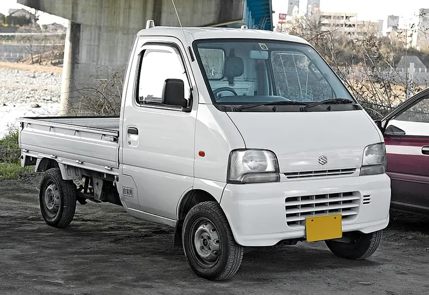
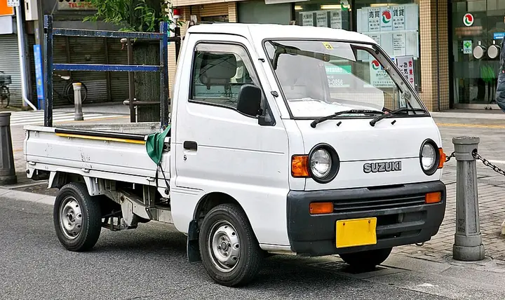
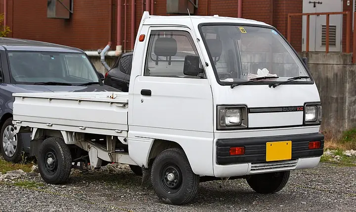
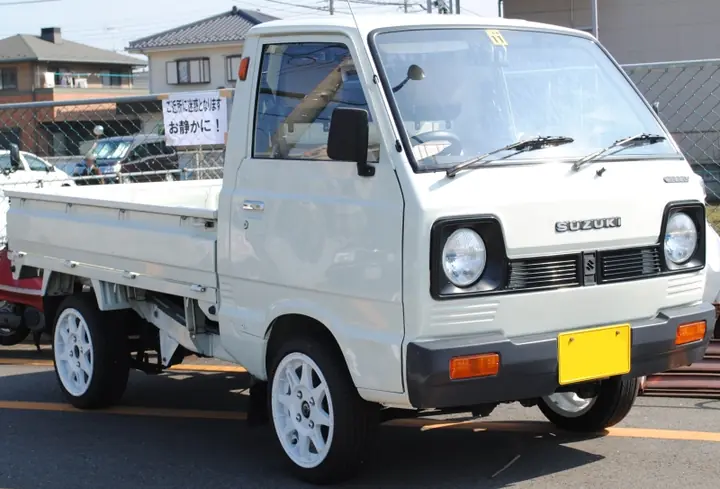
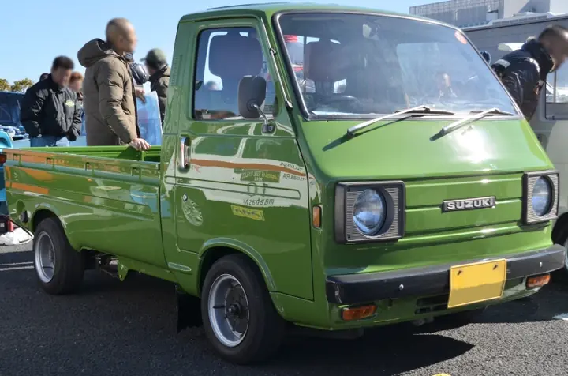
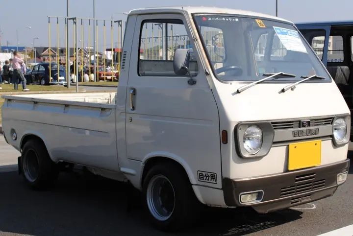
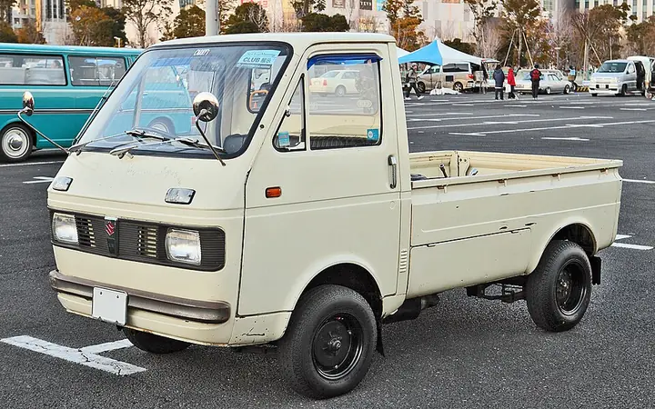
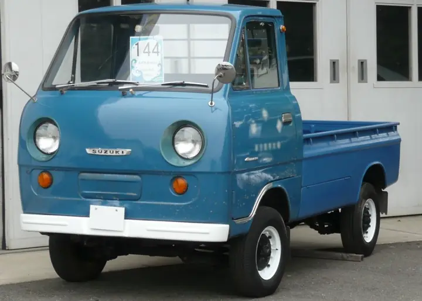
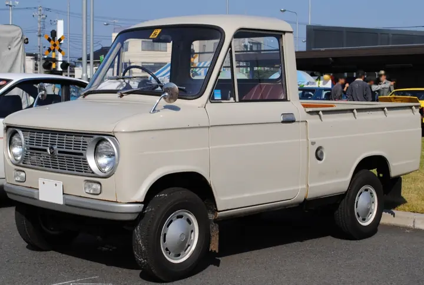
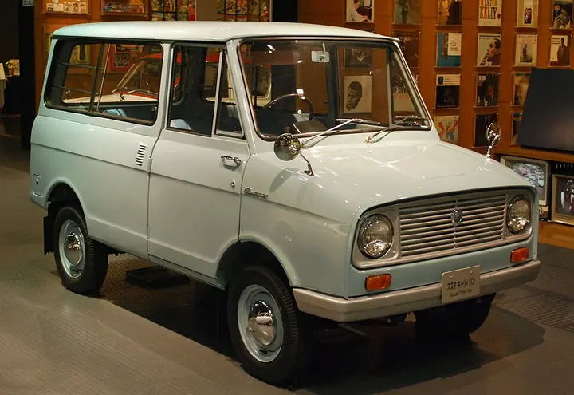

Suzuki Carry
Eleventh generation (2013) · 2013–present
Abstract
This generation of the Suzuki Carry was built September 2013–present in Japan: Iwata, Shizuoka. Body styles: 2-door pickup. Layout: FMR layout, rear-wheel drive / four-wheel drive.


1Specifications
| Production | September 2013–presentMay 2018–present (Super Carry) |
|---|---|
| Assembly | Japan: Iwata, Shizuoka |
| Body style | 2-door pickup |
| Layout | FMR layout, rear-wheel drive / four-wheel drive |
| Engine | 658 cc R06A I3 |
| Transmission | 5-speed manual3/4-speed automatic |
| Wheelbase | 1905 mm |
| Length | 3395 mm |
| Width | 1475 mm |
| Height | 1765–1885 mm |
| Weight | 680–850 kg |
| Also called | Mazda ScrumMitsubishi MinicabNissan NT100 Clipper (2013–2024)Nissan Clipper Truck (2024–present) |
2Previous generations




















3Generation by generation
Length +12% from the first to the last
ST10 19763,035 mm
ST30 19793,195 mm
DA71 19853,275 mm
DC51T 19913,295 mm
1999 19993,395 mm
2013 20133,395 mm
Weight +16% from the first to the last
ST30 1979585 kg
DA71 1985600 kg
DC51T 1991650 kg
1999 1999650 kg
2013 2013680 kg